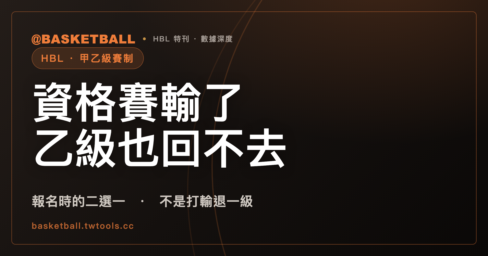

資格賽輸了，乙級也回不去：HBL 甲級與乙級是報名時的二選一，不是升降級
很多人以為 HBL 甲級與乙級是同一個聯賽的高低兩級，打得好就能往上、打不好會被降下去。114 學年度高級中等學校籃球聯賽競賽規程原文顯示，情況不是這樣：男女生組報名時就要在甲乙級之間二選一，而參加甲級資格賽沒能晉級的學校，當學年度也不能改報名乙級。

新手村｜HBL・甲乙級賽制
甲級與乙級聽起來像同一條路的高低兩級：甲級是強隊，乙級是弱隊，打得好就升上去，打得不好就掉下來。114 學年度高級中等學校籃球聯賽競賽規程原文卻不是這樣寫。規程把「報甲級還是報乙級」放在賽季開打前就要決定，而不是打完一整季看戰績再分級；更關鍵的是，報了甲級資格賽、卻沒能晉級的學校，當學年度也不能回頭改報乙級。這篇文章把規程原文拆開讀，說明甲乙級是兩條平行賽道，也帶你算一次乙級縣市預賽的晉級名額。
報名時的二選一，先於賽季開始
每年賽季開打前，各校要先決定男女生組要報名甲級還是乙級。114 學年度規程第 5 條第一款寫明：「男、女生組以各參加 1 隊為限（不得兼報甲、乙級）。」也就是說，同一個學年度、同一個性別組別，一所學校只能選一邊，不能兩邊都報，也不能一邊報甲級、一邊用另一支隊伍報乙級。
這條規則在賽季還沒開打、資格賽都還沒抽籤之前就已經生效——選邊發生在報名表交出去的那一刻，不是打完比賽之後由戰績決定。這一點很重要，因為它決定了甲級與乙級之間的關係該怎麼理解：如果甲乙級是同一條路的高低兩級，球隊理論上會先進到某一級，賽季打完再依成績升降；但 114 學年度規程對報名的安排，是把「選哪一級」放在賽季開打前。
資格賽沒晉級，乙級也報不了
甲級聯賽有名額上限。114 學年度規程第 6 條第一款第 1 目訂出男生組 16 隊、女生組 12 隊的參賽隊數上限；只有報名隊數超過這個上限時，才會加辦資格賽，用資格賽篩掉多出來的隊伍，而且資格賽階段是學校自費參加，不像正式賽會有補助。
問題在資格賽落選之後怎麼辦。規程第 6 條第一款第 2 目寫得很直接：「參加資格賽未取得晉級甲級聯賽參賽資格之學校，本學年度不得再進行報名參加乙級聯賽。」一所學校報了甲級資格賽、卻沒有打進正賽，這個學年度不能回頭改報乙級——不是打輸了退一級，是這個學年度無法再報名參加 HBL 乙級聯賽。
這條規則，就是本文開頭那句話的根據：甲級與乙級不是同一條路上可以來回移動的高低兩級，而是報名時就分岔的兩條路，一旦選了甲級、又在資格賽落選，這學年就沒有回頭路。把 114 學年度規程全 23 條逐條看過一遍，也找不到任何「降級」「轉級」或「甲級隊伍申請改踢乙級」這類條文——規程裡沒有把兩級正式接起來的通道，跟上面第 2 目的落選規定合在一起看，說明甲乙級之間沒有正式的升降級通道，不是規程用「禁止」兩個字明文擋住，而是規程從頭到尾就沒寫這條路。
甲級怎麼打：資格賽（若有）到總決賽
甲級聯賽的賽制是全國統一辦理的一條線。報名隊數沒有超過上限時，直接從預賽打起；超過上限，才會先辦上一節提到的資格賽，篩出符合男生組 16 隊、女生組 12 隊上限的正式隊伍。接下來是預賽、複賽，複賽打完後，男生組多一關準決賽——114 學年度規程訂明準決賽由複賽優勝的男生組球隊參加，共 8 隊，女生組沒有這一關。到了總決賽，參賽隊伍是男生組準決賽晉級的隊伍，加上女生組複賽第 1 到第 4 名，各 4 隊。
換句話說，同一個總決賽舞台，男生組要多打一輪準決賽才能上場，女生組打完複賽就直接晉級。這是 114 學年度甲級賽制裡，男女生組安排不完全相同的地方，也是讀甲級賽程表時容易忽略的細節。
乙級怎麼打：先比縣市，再晉級全國分區複賽
乙級聯賽的路線跟甲級不一樣，第一關不是全國性的資格賽，而是各縣市自己辦的縣市預賽。114 學年度規程第 11 條第二款訂出縣市預賽的晉級名額，依報名隊數分級核給：6 隊以下核給 1 個名額，7 到 12 隊 2 個名額，13 到 18 隊 3 個名額，19 到 24 隊 4 個名額，25 隊以上 5 個名額。晉級名額給多少，看的是同一個縣市裡報名隊伍的數量，不是固定名額。
| 縣市報名隊數 | 晉級名額 |
|---|---|
| 6 隊以下 | 1 隊 |
| 7～12 隊 | 2 隊 |
| 13～18 隊 | 3 隊 |
| 19～24 隊 | 4 隊 |
| 25 隊以上 | 5 隊 |
拿這張表可以自己算一次：假設某個縣市這學年度報了 20 隊乙級球隊，落在「19～24 隊」這一格，晉級名額就是 4 隊；如果只報了 9 隊，落在「7～12 隊」，晉級名額是 2 隊。
除了按隊數分級的名額，規程還有一條名額保護機制：上學年度乙級全國決賽前 8 名的學校，如果在本學年度縣市預賽拿到第 1 名（或者兩校都是上學年度前 8 名時的前兩名），不佔一般晉級名額，改由該縣市依縣市預賽成績擇優遞補，以遞補 2 隊為限。這個保護機制運作的邏輯，跟甲級「上學年度前 8 名球隊直接晉級預賽」的安排看起來有點像，但兩者分屬不同層級的條文——一個保護的是乙級縣市預賽裡的名額，一個保護的是甲級隊伍晉級預賽的資格——不是同一條規則，也不代表乙級前段班球隊因此有了通往甲級的路。規程原文沒有特別區分男女生組是否分別適用這套名額分級與保護機制。
通過縣市預賽之後，乙級隊伍再晉級到全國性的分區複賽；上面提到的名額保護規則裡也直接寫到「乙級全國決賽」這個詞，顯示分區複賽之後還有一個全國層級的決賽階段，不過 114 學年度規程裡分區複賽如何對到全國決賽的完整賽程，這篇沒有整理出對照表，想確認細節可以直接查閱規程原文。
規模與資源，落差存在但要看清楚年代
乙級參賽隊伍的數量，跟甲級比起來有明顯落差，但確切數字要看是哪一年——114 學年度目前查不到官方公布的逐年隊伍數統計，只能引用兩篇不同時間點的媒體報導觀察，讀的時候要留意年代。
2016 年 12 月一篇運動視界的評論文章寫到，當時乙級全台報名隊伍數落在 300 多隊，甲級約 30 隊，兩者相差約 10 倍。同一篇文章也提到，甲級資格賽在 2016 年時已經有轉播，乙級的北區、南區複賽則沒有轉播，賽制上採雙敗淘汰，每節比賽時間也比甲級少 2 分鐘。這些數字與觀察都是 2016 年的時間點，不是 114 學年度現況。
另一篇運動視界的文章，內容涉及 112 年（約 2022 到 2023 年間）HBL 競賽章程調整，文中作者自述引用高中體總網站的數字：108 學年度乙級報名隊伍（男女合計）是 395 隊，逐年下降到 111 學年度的 370 隊；以 111 學年度為例，男子甲級 40 隊、女子甲級 17 隊、男子乙級 271 隊、女子乙級 99 隊，四組合計 427 隊。這些數字是 111 學年度的紀錄，不是 114 學年度當期的數字，而且是透過媒體轉引取得，沒有直接核對高中體總官網頁面。同一篇文章也提到，這幾年已經有「TGF 恩饋續運動團隊」「BE HEROES」等網路媒體投入部分乙級賽事的報導或轉播，顯示轉播落差的樣貌在 2016 年到 112 年之間可能已經有變化，不能只憑其中一個時間點的觀察，直接套用到 114 學年度現況。
把兩篇文章合起來看，乙級參賽隊伍數量遠多於甲級、但受到的媒體與轉播關注度相對少，是 2016 年到 112 年間兩個獨立時間點觀察到的方向；至於 114 學年度當期的隊伍數與轉播現況，這篇沒有拿到官方逐年公告數字，想知道 114 學年度當期數字要另外查證。
以下是這篇文章的讀法：先確認自己校隊要報的是甲級還是乙級，再看清楚甲級資格賽落選後不能改報乙級這條規則，接著用上面的名額分級表，自己算一次任一個縣市的乙級晉級名額。下次看到 HBL 甲級或乙級的賽程表，可以先想一下這支球隊是怎麼報名、怎麼晉級到這一輪的。
常見問題
甲級和乙級可以同時報名嗎？
不行。114 學年度規程第 5 條第一款規定，男、女生組各以參加 1 隊為限，不得兼報甲、乙級。同一個學年度、同一個性別組別，一所學校要先決定報甲級還是報乙級，不能兩邊都報。
打輸甲級資格賽，可以改報名乙級聯賽嗎？
不行。114 學年度規程第 6 條第一款第 2 目規定，參加資格賽沒有取得晉級甲級聯賽資格的學校，當學年度不得再報名參加乙級聯賽。規程全文也找不到把甲乙兩級正式接起來的升降級條文，這條規則因此是甲乙級屬於兩條平行賽道、而不是可以流動的高低兩級的關鍵依據。
乙級的晉級名額怎麼算？
依 114 學年度規程第 11 條第二款，乙級縣市預賽的晉級名額按報名隊數分級核給：6 隊以下 1 個名額、7 到 12 隊 2 個名額、13 到 18 隊 3 個名額、19 到 24 隊 4 個名額、25 隊以上 5 個名額；另外，上學年度乙級全國決賽前 8 名的學校，若在本學年度縣市預賽拿到第 1 名（或兩校都是前 8 名時的前兩名），不佔一般名額，改由該縣市擇優遞補，以遞補 2 隊為限。規程原文沒有特別區分男女生組是否分別適用這套規則。
乙級真的比甲級規模小很多、資源也比較少嗎？
方向上是的，但確切數字要看年代。2016 年一篇媒體報導觀察到乙級報名隊伍約 300 多隊、甲級約 30 隊，相差約 10 倍；另一篇涉及 112 年（約 2022 至 2023 年）調整的報導引用高中體總網站數字，指出 111 學年度男女甲乙四組合計 427 隊，乙級報名隊數從 108 學年度的 395 隊降到 111 學年度的 370 隊。這兩篇文章都不是 114 學年度當期數字，只能作為方向性參考。轉播資源部分，2016 年的報導觀察到乙級複賽沒有轉播，但較晚的報導提到已有網路媒體投入部分乙級賽事報導，落差樣貌可能隨時間變化，不宜直接套用到 114 學年度現況。
資料來源
- 114 學年度高級中等學校籃球聯賽競賽規程（修正版），取得方式：頁面逐頁抓取存檔，取得日 2026-09-27：hbl.com.tw/rule
- 運動視界〈高中乙級籃球聯賽的窘境〉，發布 2016/12/27，取得日 2026-09-27：sportsv.net/articles/37047
- 運動視界〈粗暴的改革？高中乙級籃球發展的一記重拳：112 年 HBL 競賽章程變更〉，取得日 2026-09-27：sportsv.net/articles/106641